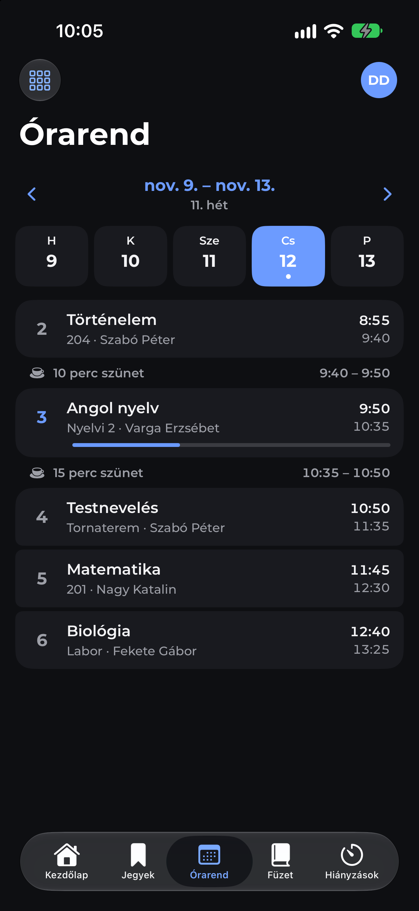
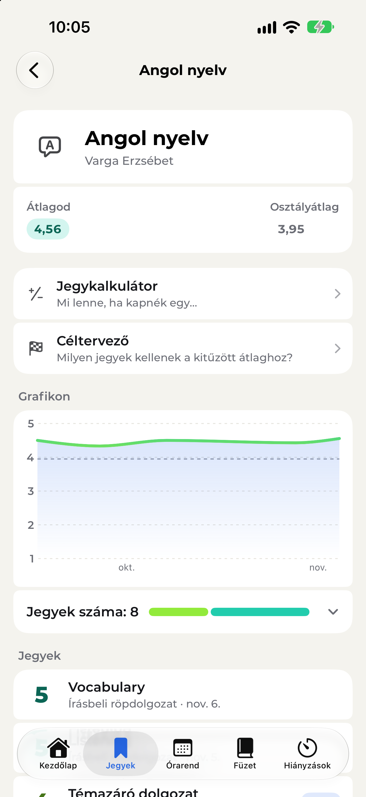
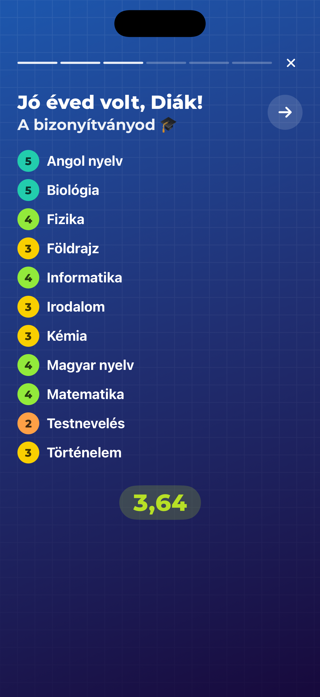
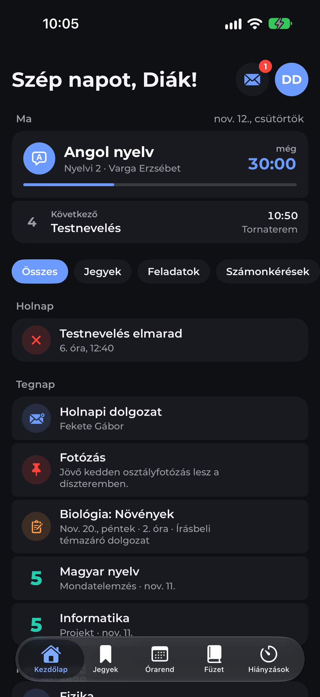
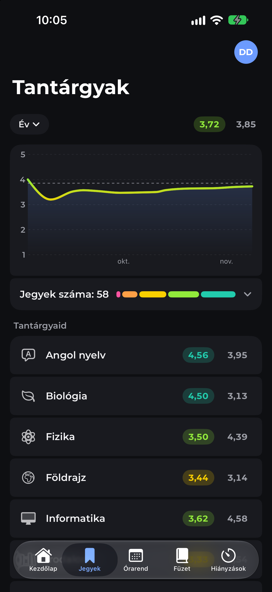
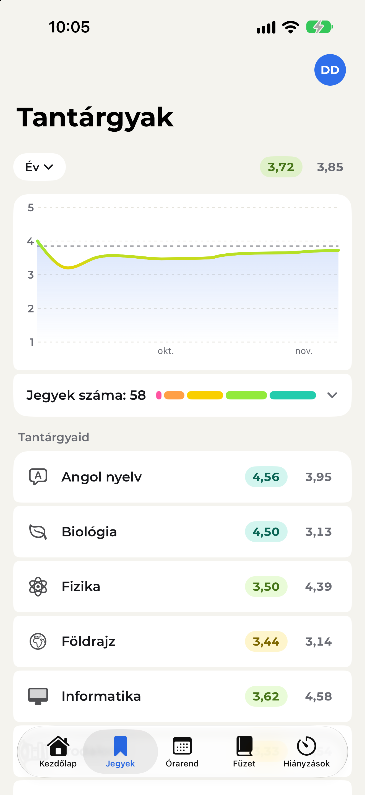
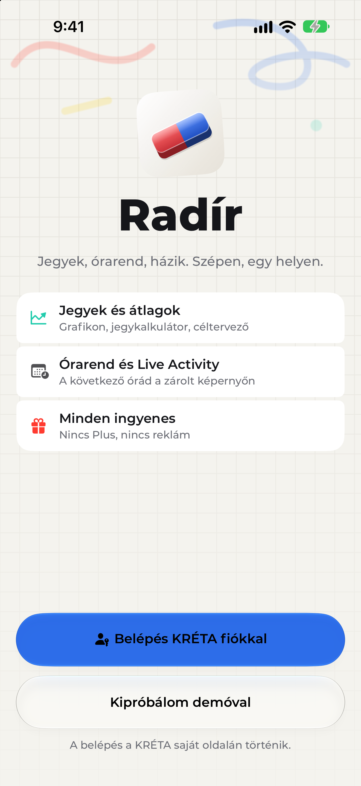

Hiba történtKérjük, próbálja újra később.
A munkamenet lejártJelentkezzen be újra a folytatáshoz.









Radír
A KRÉTA, ahogy szeretnéd
Jelentkezz a várólistára
Ingyenes iPhone-app a KRÉTÁ-hoz
Link a bióban